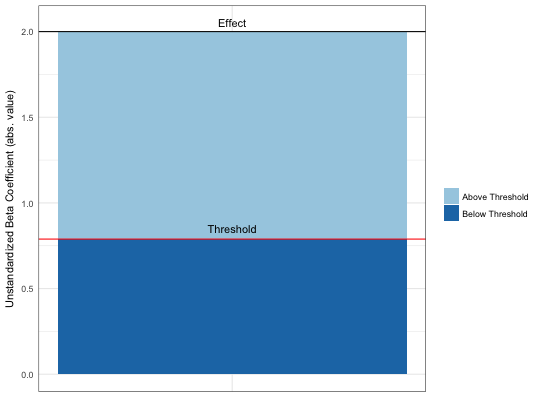
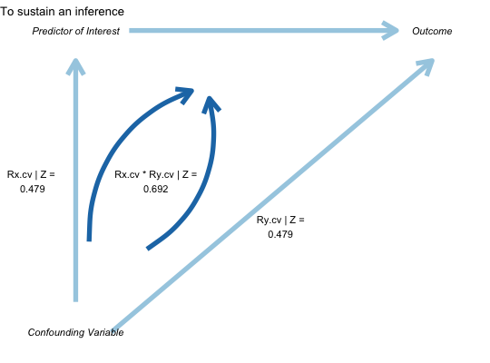

For published studies, this command calculates (1) how much bias there must be in an estimate to invalidate/sustain an inference; (2) the impact of an omitted variable necessary to invalidate/sustain an inference for a regression coefficient.
pkonfound(unstd_beta, std_err, n_obs, n_covariates = 1, alpha = 0.05, tails = 2, nu = 0, to_return = "print", component_correlations = FALSE)
| unstd_beta | an unstandardized regression coefficient |
|---|---|
| std_err | the standard error of the estimate of the unstandardized regression coefficient |
| n_obs | the number of observations in the sample |
| n_covariates | the number of covariates in the regression model |
| alpha | probability of rejecting the null hypothesis (defaults to 0.05) |
| tails | integer whether hypothesis testing is one-tailed (1) or two-tailed (2; defaults to 2) |
| nu | what hypothesis to be tested; defaults to testing whether unstd_beta is significantly different from 0 |
| to_return | whether to return a data.frame (by specifying this argument to equal "df") or a plot ("plot"); default is to print the output to the console |
| component_correlations | whether to return the component correlations as part of the correlation-based approach |
prints the bias and the number of cases that would have to be replaced with cases for which there is no effect to invalidate the inference
pkonfound(2, .4, 100, 3)#> Replacement of Cases Approach: #> To invalidate the inference, 60.3 % of the estimate would have to be due to bias. #> To invalidate the inference, 60 observations would have to be replaced with cases for which the effect is 0. #> #> Correlation-based Approach: #> An omitted variable would have to be correlated at 0.568 with the outcome and at 0.568 with the predictor of interest (conditioning on observed covariates) to invalidate an inference. #> Correspondingly the impact of an omitted variable (as defined in Frank 2000) must be 0.568 X 0.568 = 0.754 to sustain an inference.pkonfound(.4, 2, 100, 3)#> Replacement of Cases Approach: #> To sustain the inference, 89.924 % of the estimate would have to be due to bias.To sustain the inference, 90 of the cases with 0 #> effect would have to be replaced with cases at the threshold of inference. #> #> Correlation-based Approach: #> An omitted variable would have to be correlated at 0.387 with the outcome and at 0.387 with the predictor of interest (conditioning on observed covariates) to sustain an inference. #> Correspondingly the impact of an omitted variable (as defined in Frank 2000) must be 0.387 X 0.387 = 0.622 to invalidate an inference.pkonfound(-2, .4, 200, 3)#> Replacement of Cases Approach: #> To invalidate the inference, 60.557 % of the estimate would have to be due to bias. #> To invalidate the inference, 121 observations would have to be replaced with cases for which the effect is 0. #> #> Correlation-based Approach: #> An omitted variable would have to be correlated at 0.479 with the outcome and at 0.479 with the predictor of interest (conditioning on observed covariates) to invalidate an inference. #> Correspondingly the impact of an omitted variable (as defined in Frank 2000) must be 0.479 X 0.479 = 0.692 to sustain an inference.pkonfound(2, .4, 200, 3, to_return = "thresh_plot")pkonfound(2, .4, 200, 3, to_return = "corr_plot")